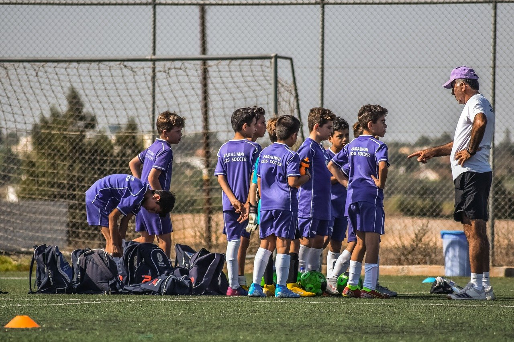

Om Webtek-FC
Her vil du kunne lese om oss her i Webtek FC. Informasjon om historien vår, lagene våres (inkludert aldersgrupper), trenerne og kamper/baner.
Historien til Webtek-FC
For en del år tilbake i Trondheim fantes det kun noen få fotball klubber, men det var ingen fotball klubb som tok imot alle aldre. Det var en gruppe venner som jobbet som amatørtrenere som valgte å stifte denne klubben. En klubb for alle aldre, hvor man kan trene seperat eller sammen imellom alle gruppene. Etterhvert som klubben ble mer populær, begynte det å komme flere trenere med litt mer kompetanse som kunne være trener til lag som konkurrerer i toppklassen. Og nå er vi en klubb med over 10 trenere og 150 spillere. Vårt ønske er å gjøre webtek FC til et av norges største fotball klubber.
Om lagene
Klubben består av følgende lag:
- Minilaget: Gutter og jenter i alder 5-13
- Ungdomsguttene/Ungdomsjentene: To forskjellige lag for gutter og jenter i alderes 13-18
- Junior laget: Spillere mellom 19-35
- B-Laget: Aktive spillere mellom 18-35
- A-Laget: Topplaget, spillere i alderen 18-35
- MiniSeniorene: Spillere i alderen 30+
- Seniorene: Et lag for seniorer som vil spille litt i fritden (60+)
Høres dette interresant ut? Sjekk ut mer på Medlemsskap.
Om Trenerne
Trenerne har en stor betydning for WebtekFC. Sammen med de 5 amatør trenerne har vi fått 5 nye trenere. hvorav 4 av de er på det profosjonelle nivået. Dette er vi veldig glade for, disse 4 er asvarlige for A og B laget. Vi ønsker veldig å få inn flere trenere som ønsker å delta i webtek samfunnet.
Kamper og bane
Treningene skjer på forskjellige baner i Trondheim. Minilaget, Ungdomsgjengen og junior laget, holder seg til Nardo. Mens A og B laget har vært så hedlige å få spille på Lerkdendal! Noen ganger trener vi med RBK. MiniSeniorene og seniorene holder seg til på Lade. Treningstidene pleier å være mellom 16-22, for nærmere informasjon trykk på kontakt oss nederst på siden.